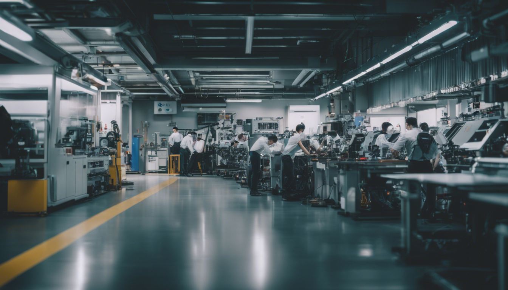
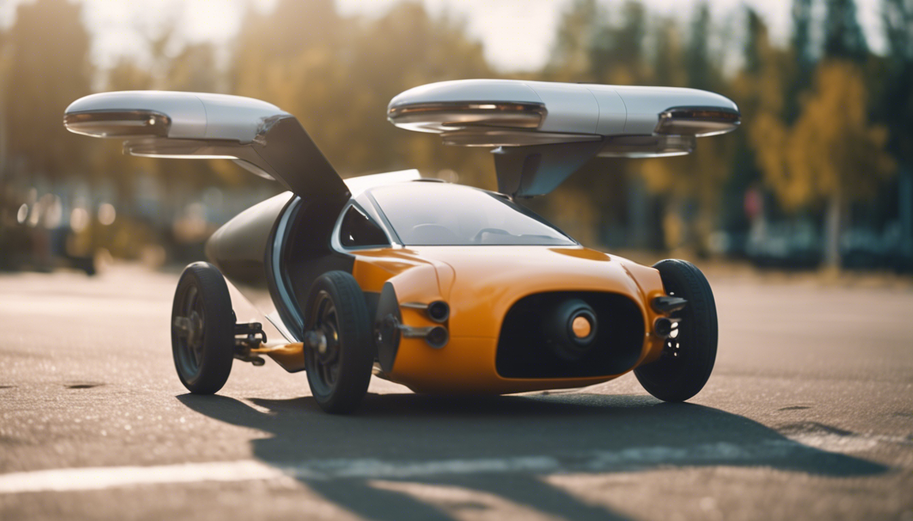
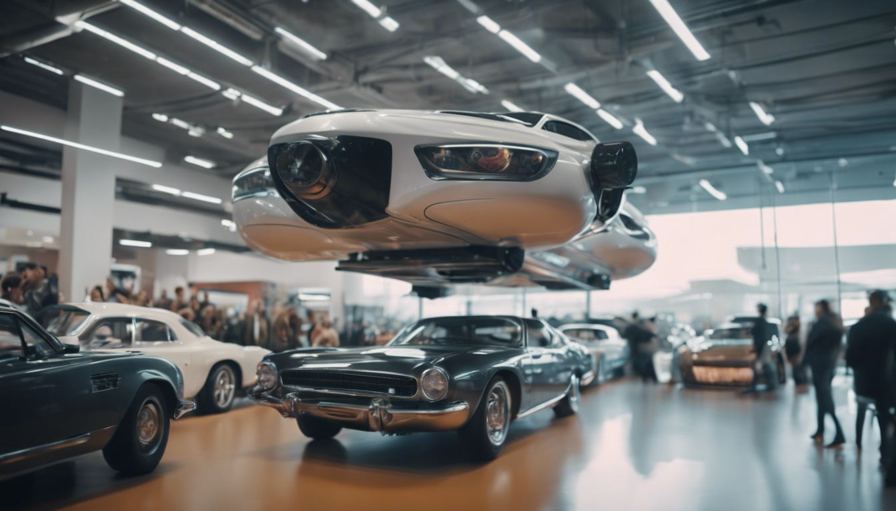
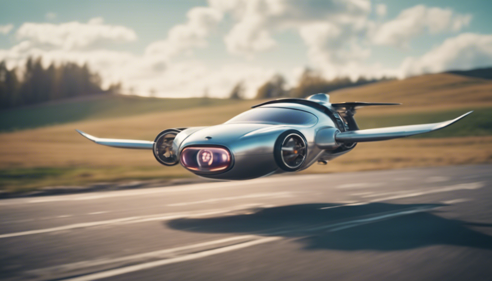

2012 - 2020
Fundación en 2012 por un grupo de ingenieros japoneses en Suzuka que querían revolucionar la industria automotriz.

2020 - 2025
Después de años de investigación y desarrollo, SkyDrive finalmente lanza su primer prototipo de auto volador.

2025 - 2030
SkyDrive cosecha su primer éxito rotundo y recibe mucha atención de los medios de comunicación y del público en general.

2030 - 2040
En este año la empresa lanza su modelo más avanzado hasta la fecha, el “SkyDrive SD-03". Siendo un éxito global por alcanzar velocidades subsonicas.

2040 - Presente y futuro...
Hoy en día, SkyDrive sigue siendo una de las empresas líderes en la industria de los autos voladores. La empresa ha ganado numerosos premios y reconocimientos por su innovación y excelencia en ingeniería.